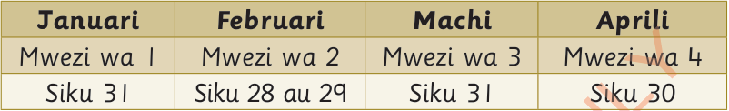
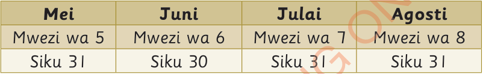
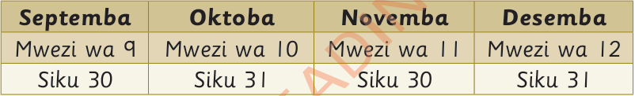

1. Saa 24 ni sawa na siku ngapi?
Majina ya miezi katika mwaka
Mwaka mmoja una miezi kumi na mbili. Kila mwezi una jina lake kama inavyooneshwa katika jedwali lifuatalo.



Zoezi la 5
2. Siku 7 ni sawa na wiki ngapi?
3. Mwezi mmoja una wiki ngapi?
4. Mwezi mmoja una siku ngapi?
5. Miezi 12 ni sawa na miaka mingapi?
6. Bakari alinunua muda wa maongezi ambao ulidumu kwa muda wa saa 48.Je, muda huu ni sawa na siku ngapi?
Kalenda
Kalenda huonesha siku, wiki, mwezi na mwaka. Kalenda huonesha tarehe za matukio muhimu ya kitaifa na kimataifa. Kalenda hutuwezesha kujua aina ya mwaka iwapo ni mfupi au mrefu. Katika mwaka mrefu mwezi Februari huwa na siku 29. Mwaka mfupi mwezi Februari una siku 28.